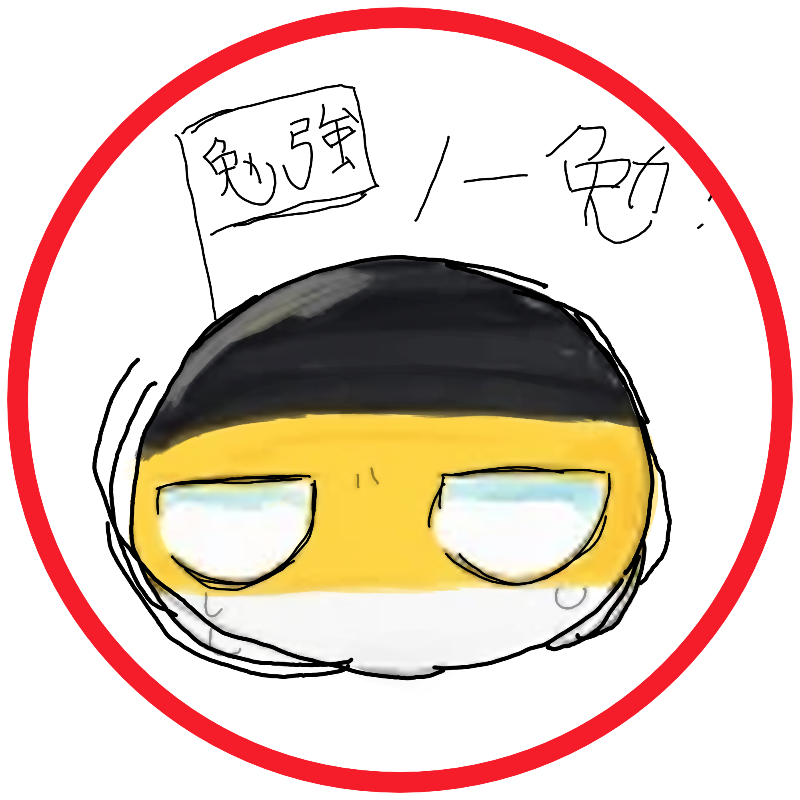
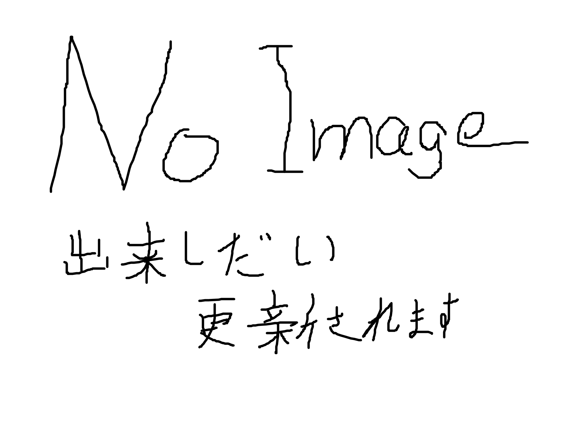
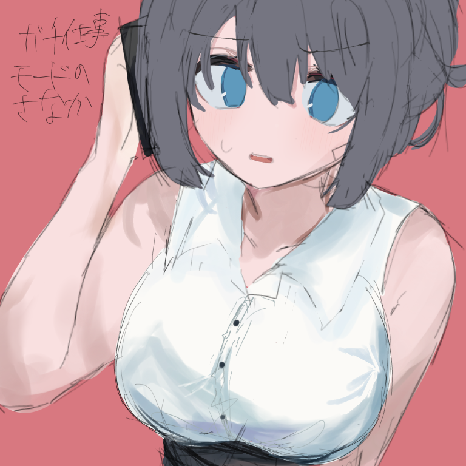
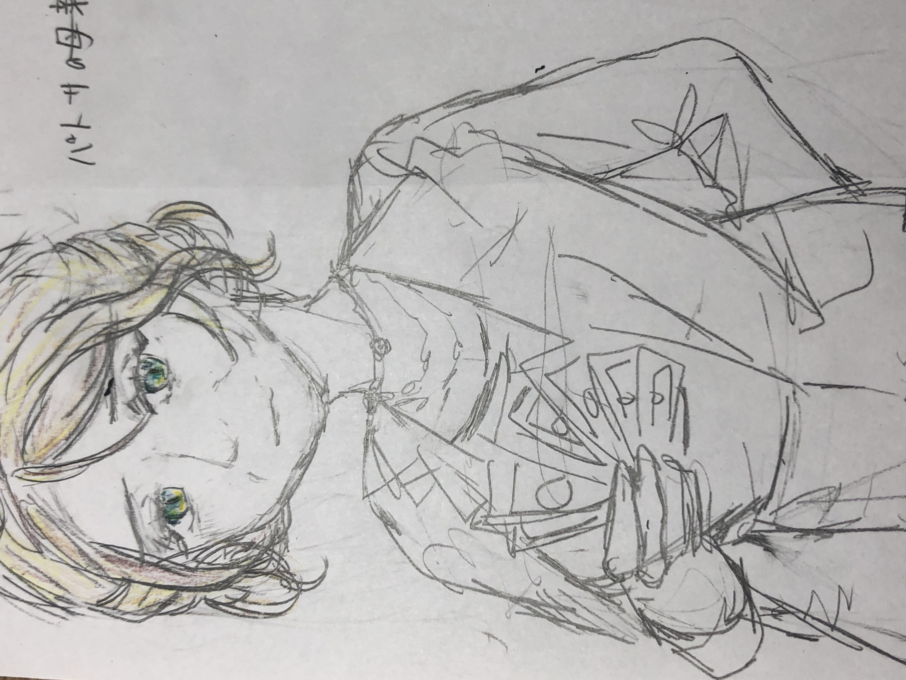

さなか子。
重大な警告
このページではスクリーンショットを禁止しています。スクリーンショットを行うと重大な被害が発生する場合があります。公共の場では絶対にしないでください。音害注意
このページではデベロッパーツールを禁止しています。開発者ツールの展開を行うと重大な被害が発生する場合があります。公共の場では絶対にしないでください。音害注意
このページでは、コピー、共有も禁止しています。
翻訳を使用すると、固有名詞は異なる言葉になることがあります。正しい名前はそれぞれのタイトル部分を確認してください。
ページ内リンク
エイキチ Eikitiパトサ Podso
アナトリー Anatoly
冬革 Touka
さなか Sanaka
パトサの母 Podso's mom
イラストは核ガンジー激推し各願寺僧侶だおの作品です。
警告 この文書は一部検閲されています。検閲済みの情報への不正アクセスはソビエト社会民主主義共和国連邦内務人民委員部及びエイキチ社会民主主義共和国連邦軍総合情報統制部への通達がなされます。
検閲を解除すると重大な被害が発生する場合があります。公共の場では絶対にしないでください。音害注意エイキチ/Eikiti
本名―日本語 エイキチ・エイキチエブナ・サチカムニスカヤ
本名―英語 Eikiti Eikitevna Sochikomniskaya
本名―ロシア語 Эйкити Эйкитевна Социкомниская
本名―タタール語 Эйкити Эйкитевна Социкомниская/Eykiti Eykitevna Soçikomniskaya
説明
パトサの口にマカロフを突っ込んだことがあるパトサ/Podso
本名―日本語 パトサルニスクリナ・ユーリブナ・ペチュナダブロスカヤ
本名―英語 Podsolniskrena Yuryevna Vechndobroskaia
本名―ロシア語 Подсолнискрена Юрьевна Вечндоброская
本名―ウクライナ語 Подсолнісцрена Юріївна Вечндоброська
説明
アナトリー/Anatoly

本名―日本語 アナトリー・ディクビッチ・ヤリチンコフ
本名―英語 Anatoly Dikvich Yaritinkov
本名―ロシア語 Анатолий Диквич Яритинков
説明
冬革/Touka
本名―日本語 永徳冬革
本名―英語 Touka Nagatoku
説明
さなか/Sanaka

本名―日本語 青影早嫋/サナカ・ウォリビトブナ・モナスティバ
本名―英語 Sanayo Aokage/Sanaka Uorybitovna Monastiva
本名―ロシア語 Санайо Аокаге/Санака Уорыбитовна Монастива
説明
プラスコーヴィヤ/Praskovia

本名―日本語 プラスコーヴィヤ
本名―英語 Praskovia
本名―ロシア語 Прасковья
説明
中の人


本名
本名
説明